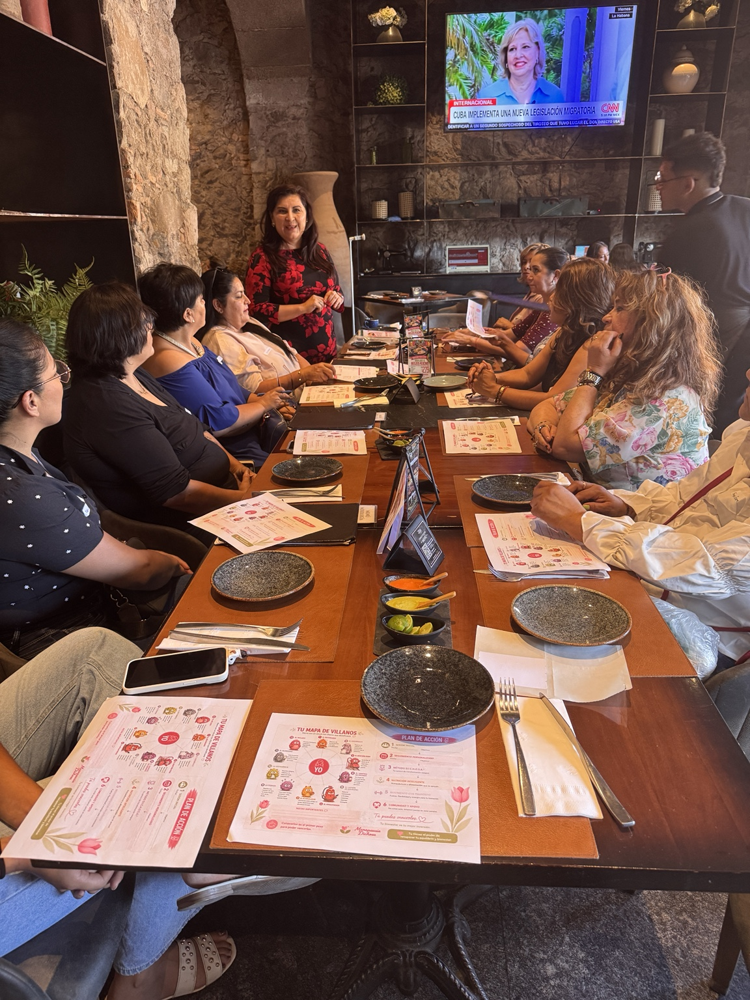
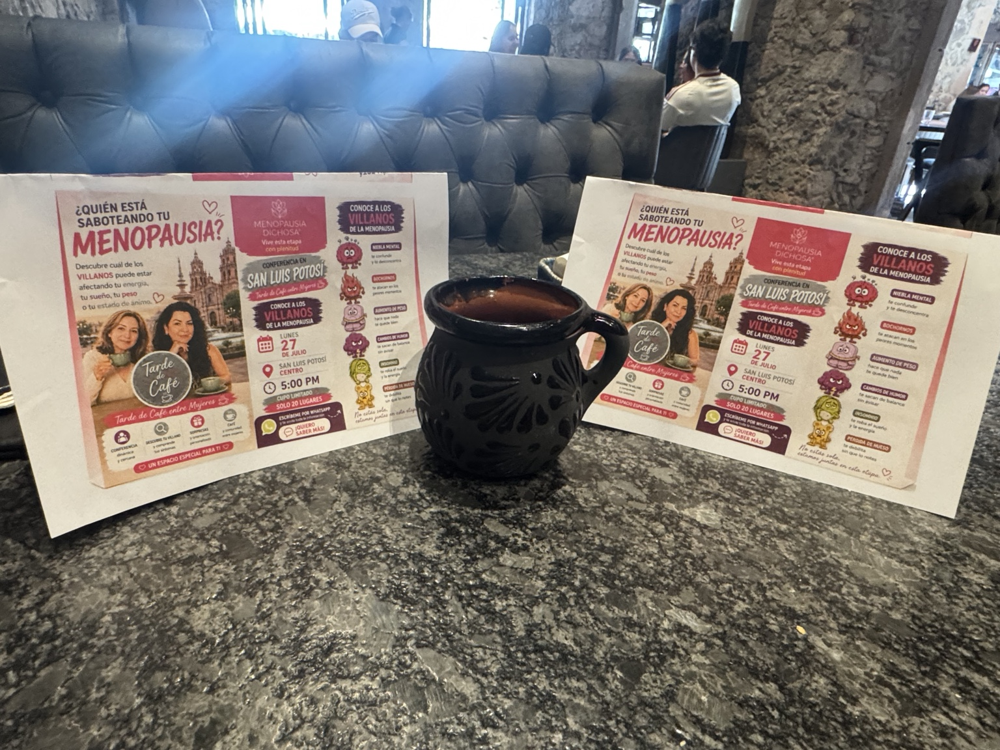

Despierta
Comprende la transición menopáusica, sus cambios y los mitos que generan miedo o desinformación.
Una comunidad de mujeres preparadas para aprender, acompañar e inspirar.

Ser Embajadora significa formar parte de una comunidad preparada para informar, escuchar, acompañar y abrir conversaciones que durante demasiado tiempo se han vivido en silencio.
“No necesitas tener todas las respuestas. Necesitas disposición para aprender y servir.”

Encuentros reales para informar, escuchar y conectar.
Aquí no se describe solamente lo que harás, sino cómo aprenderás a hacerlo.
Comprende la transición menopáusica, sus cambios y los mitos que generan miedo o desinformación.
Conoce a los Villanos de la Menopausia y aprende a utilizar el test como herramienta de conversación.
Desarrolla escucha empática, comunicación cercana y límites responsables para acompañar sin invadir.
Lleva la causa a tu entorno mediante conversaciones, cafés, círculos y encuentros entre mujeres.
Fortalece tu liderazgo, amplía el movimiento y abre nuevas posibilidades para ti y para otras mujeres.
Comprender para acompañar. Aprender para actuar.
Tendrás una ruta, herramientas y una comunidad de respaldo.
Sesiones iniciales, práctica y actualización continua.
Manual, guías, test, dinámicas y piezas digitales.
Un espacio para compartir avances y resolver dudas.
Mujeres con propósito, experiencias y apoyo mutuo.
Oportunidades para participar, liderar y representar la causa.
Más seguridad, comunicación, liderazgo y presencia digital.
La menopausia financiera también puede invitarte a reconocer tu experiencia, fortalecer tus habilidades y construir una vida con mayor autonomía.
Tu conocimiento también tiene valor.Las Embajadoras que deseen dar un paso adicional podrán conocer una alternativa respaldada por herramientas, acompañamiento y un modelo ya establecido.

Materiales pensados para facilitar conversaciones, reconocer necesidades y dar seguimiento.
Buscamos mujeres reales: empáticas, responsables, dispuestas a aprender y con el deseo de generar un impacto positivo en su comunidad.
Da el primer paso y escribe: